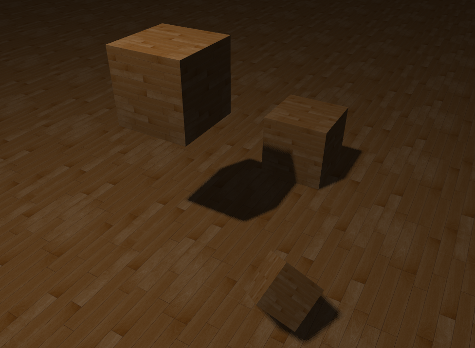
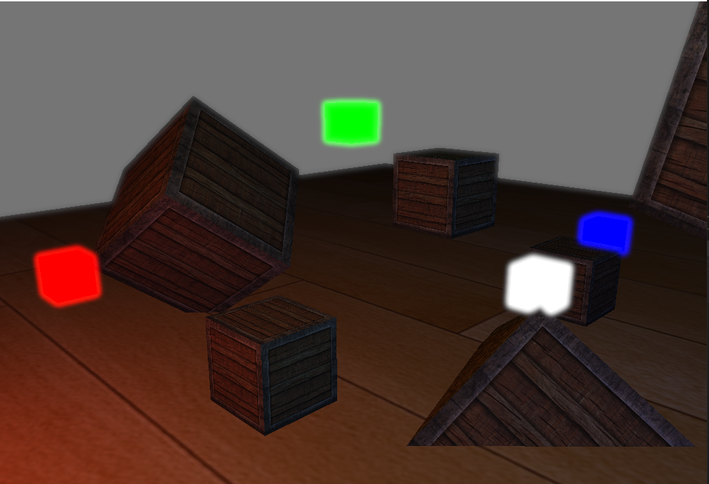
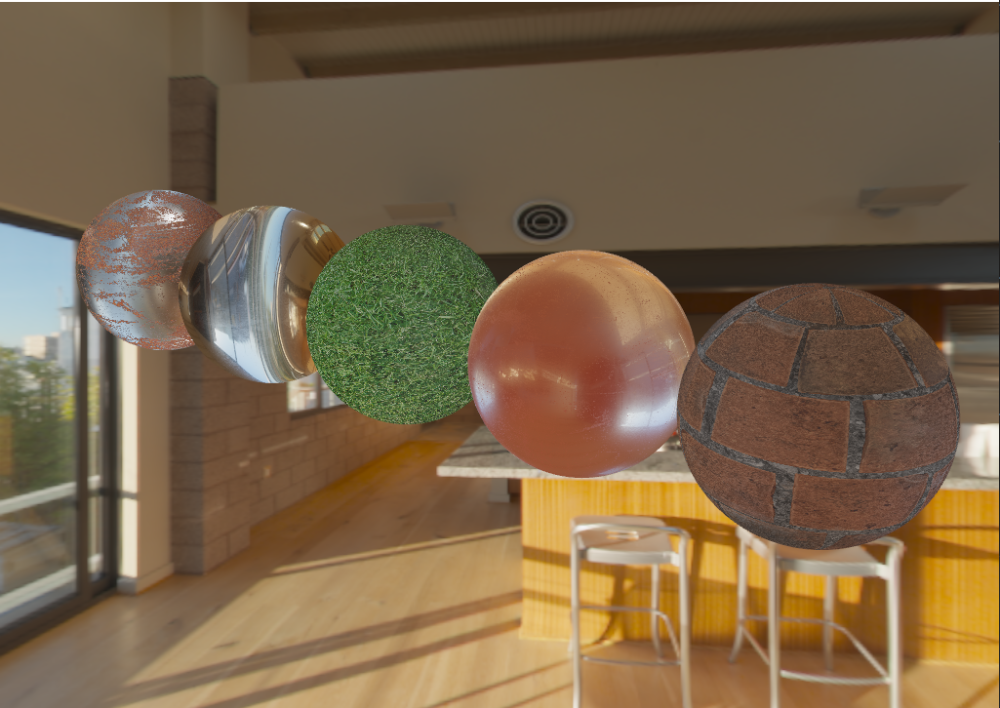

My personal 3D game engine using multiple rendering APIs.
Monocle is my learning project when I want to experiment with new rendering algorithms or new APIs I don't know yet.
It is meant to be a modular and flexible framework for 3D applications, using a number of DLLs representing each of the engine's "modules" (Audio, Physics, Rendering, Window...).
It is built using CMake.
The project is open source and available on Github, although the code there isn't always up-to-date (or on secondary branches).
It went through multiple iterations and is in a constant "work in progress" state.
Thus, it is by no means usable to develop a real game at the moment...
But here is a list of the important modules it has, and their main features :
This module is meant to be a central module for all others to include and use features of.
Among other things, it features :
A module meant to provide more game-centric data structures. Among others :
At its core, Monocle was always intended to be kind of a toy renderer sandbox, although a game engine is always much more than just that.
The graphics features I successfully implemented with Monocle :
Unfortunately it does not work on all backends and most of it has been done in OpenGL so far.
Slowly but surely adapting it to all backends ! (One day...)
So far, I programmed in Monocle abstractions of the following rendering backends :
OpenGL 4 (with the newer DSA calls)
DirectX 11 (in progress)
Vulkan (in progress)
But so far, the code never has been really cleaned up and is very messy. It works, but needs constant refactoring.
Hopefully I can stabilize it one day to a common RHI (Render Hardware Interface) that I like.



Apart from the features of the engine, I try as much as I can to include unit tests for all easily testables features of the engine.
To do so, I use Catch2 as a testing framework.
A dedicated program built alongside the engine makes the user able to run the tests and easily add new ones if necessary.
What I would like to tackle someday :
The list is endless... Got work for at least the next decade !